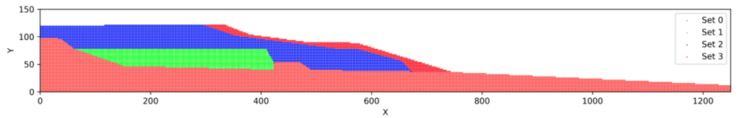

cbgeopy documentation
Welcome to cbgeopy’s documentation.
Introduction
Features
cbgeopy is a tool to generate material point method (MPM) model. The output model
and associated files can be directly used as input files for CB-geo MPM.
It supports the followings major features.
Generate MPM models (background mesh and material points) for 2D and 3D space.
Generate multi-layered material points for mountain-like topography (2D) from user-defined points that represents layer boundary line.


Generate multi-layered material points for mountain-like topography (3D) from user-defined mesh file that represents layer boundary.*

Appending user-defined material point files (
.csv) to the existing material points.Save material points as
.vtkor.htmlfiles for visualization.Generate CB-geo MPM input files wth user-defined constraints associated with the generated material points. The followings are the CB-geo MPM specific files that the code can generate.
entity_sets.json: defines cell group and particle group.mpm.json: defines cell and particle group constraints and boundary conditions. Defines other CB-geo related simulation settings.
Tools for post and preprocessing of CB-geo MPM.
Tools for post and preprocessing of making GNS training data from CB-geo MPM.
Usage
The following code shows an example for generating material point method model for simulating a rectangular cube drop
due to gravity. More examples can be found in ./examples.
import utils
from mpm import MPMConfig
import os
import math
save_dir = './'
# Set config
lx, ly, lz = 2.5, 0.3, 1.5
mpm = MPMConfig(domain_origin=[0, 0, 0], domain_length=[lx, ly, lz])
# Mesh
cell_size = 0.1
mpm.add_mesh(
n_cells_per_dim=[math.ceil(lx/cell_size),
math.ceil(ly/cell_size),
math.ceil(lz/cell_size)])
# Add materials
mpm.add_materials(
[
{
"id": 0,
"density": 1800,
"youngs_modulus": 1e7,
"poisson_ratio": 0.2,
"friction": 33.0,
"dilation": 0.0,
"cohesion": 100,
"tension_cutoff": 50,
"softening": False,
"peak_pdstrain": 0.0,
"residual_friction": 30.0,
"residual_dilation": 0.0,
"residual_cohesion": 0.0,
"residual_pdstrain": 0.0,
"type": "MohrCoulomb3D"
}
]
)
# Particles
mpm.add_particles_cube(
cube_origin=[0, 0, 0],
cube_length=[1.0, 0.3, 1.2],
material_id=0,
n_particle_per_cell=4,
particle_group_id=0
)
# Define particle entities for all particle sets added to `mpm` instance.
# The id of the particle set will follow `particle_group_id` defined by `add_particles_cube` method.
mpm.define_particle_entity()
# Boundary constraints
mpm.define_boundary_entity()
# Note that `define_boundary_entity` automatically assign node set id 0 to 5 to each boundary in 3d domain.
# So, if you want to assign additional node set id, you need to start from 6.
mpm.add_velocity_constraints(
[
{"axis": "x", "bound_loc": "start", "velocity": 0.0}, # node set id 0 (hardcoded)
{"axis": "x", "bound_loc": "end", "velocity": 0.0}, # node set id 1 (hardcoded)
{"axis": "y", "bound_loc": "start", "velocity": 0.0}, # node set id 2 (hardcoded)
{"axis": "y", "bound_loc": "end", "velocity": 0.0}, # node set id 3 (hardcoded)
{"axis": "z", "bound_loc": "start", "velocity": 0.0}, # node set id 4 (hardcoded)
{"axis": "z", "bound_loc": "end", "velocity": 0.0} # node set id 5 (hardcoded)
]
)
mpm.add_friction_constrains(
[
{"axis": "x", "bound_loc": "start", "sign_n": -1, "friction": 0.4},
{"axis": "x", "bound_loc": "end", "sign_n": 1, "friction": 0.4},
# {"axis": "y", "bound_loc": "start", "sign_n": -1, "friction": 0},
# {"axis": "y", "bound_loc": "end", "sign_n": 1, "friction": 0},
{"axis": "z", "bound_loc": "start", "sign_n": -1, "friction": 0.4},
{"axis": "z", "bound_loc": "end", "sign_n": 1, "friction": 0.4}
]
)
# If you want to add additional cell entity by defining another node set, you can do the following.
# Note that nset_id should be larger than 5, since six boundaries already occupies nset_id 0 to 5.
mpm.add_cell_entity(
nset_id=6,
ranges=[[1.0-0.01, 1.0+0.01],
[0-0.01, 0.3+0.01],
[0-0.01, 1.5+0.01]]
)
# External loading conditions
mpm.add_external_loadings(
{"gravity": [0, 0, -9.81]}
)
# Analysis settings
mpm.analysis({
"mpm_scheme": "usl",
"locate_particles": False,
"dt": 1e-06,
"damping": {
"type": "Cundall",
"damping_factor": 0.05
},
"resume": {
"resume": False,
"step": 0,
"uuid": "sand3d"
},
"velocity_update": False,
"nsteps": int(1e6),
"type": "MPMExplicit3D",
"uuid": "sand3d"
})
# Post-processing
mpm.post_processing({
"path": "results/",
"output_steps": 5000,
"vtk": [
"displacements", "stresses"
]
})
mpm.write(save_dir=save_dir)
# mpm.visualize_mesh(save_path=f'{save_dir}/mesh_config.html', node_indices=True)
mpm.visualize_particles(save_path=f'{save_dir}/particle_config.html')
# Save the current script
# Get the path of the currently running script (main.py)
current_script_path = os.path.abspath(__file__)
utils.save_script(
current_script_path,
save_path=f'{save_dir}/input_script.py')
Installation
# Initiate a python virtual environment.
python -m virtualenv venv
# Activate the virtual environment.
source venv/bin/activate
# Install dependencies.
python -m pip install --upgrade pip
pip install -r requirements.txt
Note
To create parallel .h5, use this code.
TODO
[ ] Improve 3D base mesh projection method.